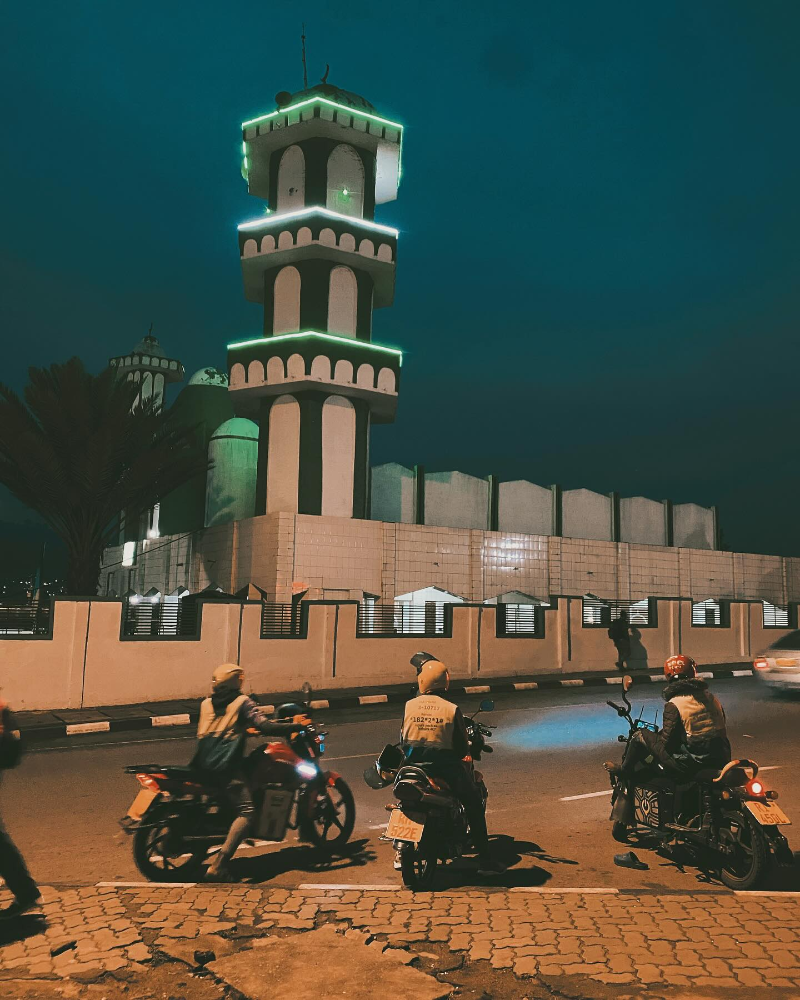
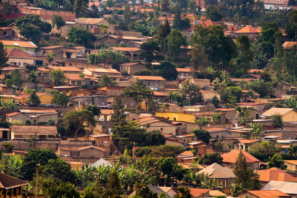
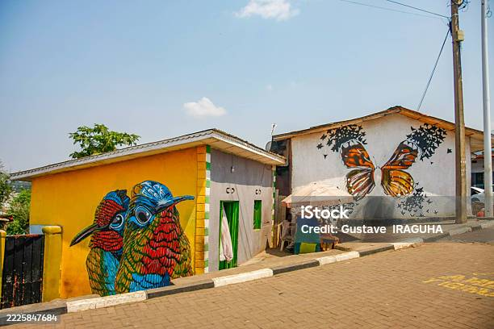
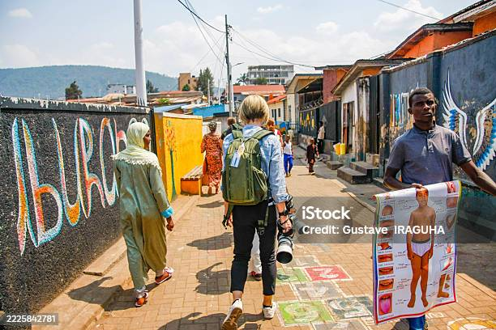
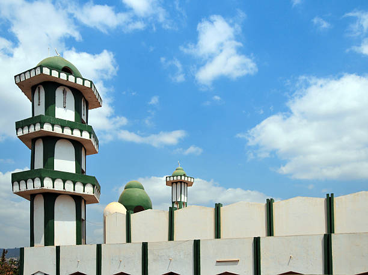
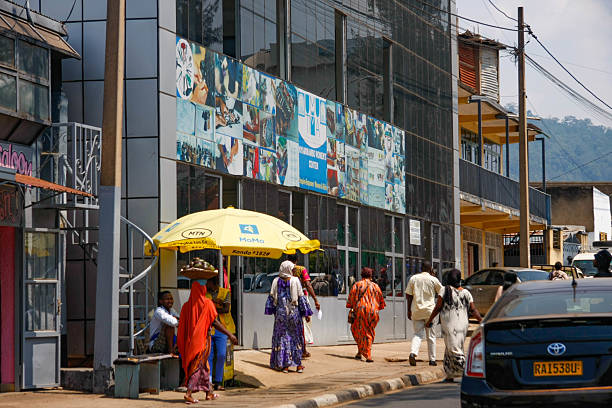
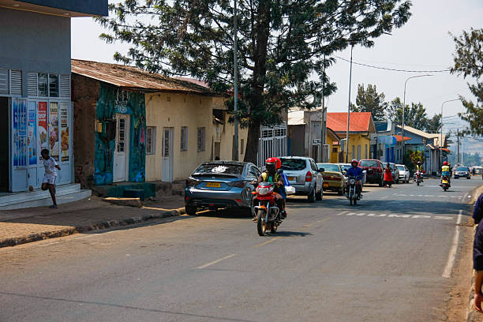

Nyamirambo Walking Tour
Experience authentic Kigali culture and community
About Nyamirambo
Nyamirambo is one of Kigali's most vibrant and historic neighborhoods, known for its rich cultural heritage and local community spirit. This walking tour takes you through bustling markets, colorful streets, and authentic local experiences. You'll interact with locals, learn about their daily lives, and discover the true essence of Kigali.
The neighborhood represents the heart of local commerce and culture in Kigali. Visitors will experience markets, local shops, artisan crafts, and genuine hospitality from residents who are passionate about sharing their community. Nyamirambo has been a cultural hub for decades, preserving traditional Rwandan values while embracing modern development.
Nyamirambo Walking Tour - Step by Step
Duration: 3-4 hours | Difficulty: Easy | Best Time: Morning
- Start at Nyamirambo Market Entrance - Meet your guide at the main market entrance. Get oriented with the layout and learn about the market's history dating back decades.
- Explore the Fresh Produce Market - Walk through stalls of fresh fruits, vegetables, and local foods. Chat with vendors about seasonal products and pricing.
- Visit Local Craft Shops - Browse handmade crafts, traditional baskets, beaded jewelry, and locally made souvenirs created by Kigali artisans.
- Street Food Tasting - Stop at local food vendors to sample authentic Rwandan street food including samosas, mandazi, and grilled corn.
- Community Center Visit - Visit a local community center to learn about neighborhood initiatives and youth programs supporting education.
- Local Residence Tour - Visit a typical local home to understand how residents live and experience their hospitality with tea or juice.
- Women's Cooperative Handcraft Studio - Meet local women artisans creating traditional crafts and learn their techniques and stories.
- Final Stop: Local Restaurant - End the tour at an authentic local restaurant for lunch with your guide, sharing your experiences.
Gallery

Vibrant Market

Local Crafts

Street Food

Community Spirit

Colorful Streets

Local Vendors

Market Scene

Neighborhood View
Tour Tips
- Start early to see the market at its most active
- Bring cash for food tasting and souvenirs
- Wear comfortable walking shoes
- Bring water and sun protection
- Be respectful when taking photos - ask permission first
- Learn a few Kinyarwanda phrases to connect with locals